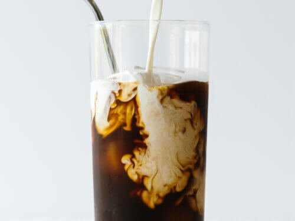

A nice macro friendly snack perfect for evenings or enjoyed with add in's for a mor`e robust meal.
Cold brew coffee does not have to be complicated, so please take a look and see just how easy velvety smooth cold brew can be

A lovely addition to any meal, this salsa verde will add in a ton of flavor without bringing the heat